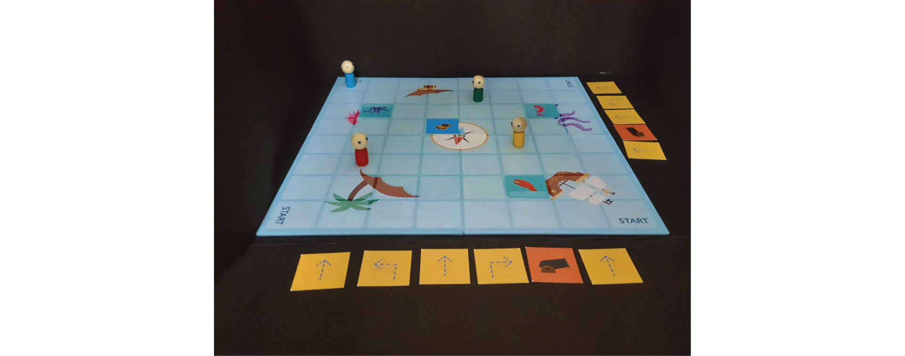
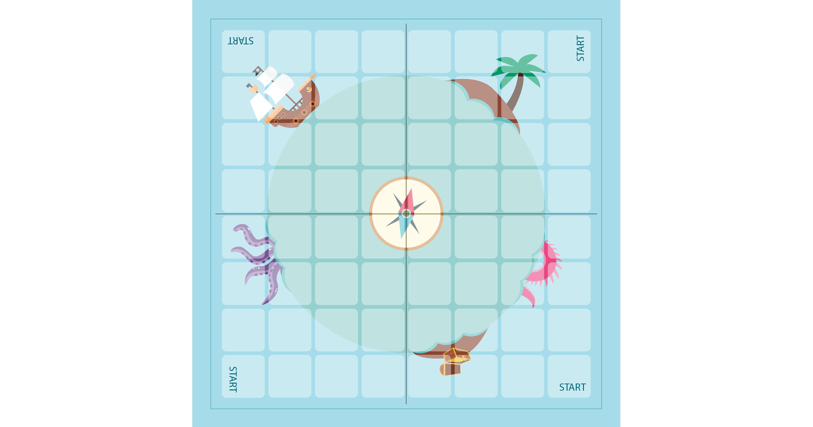
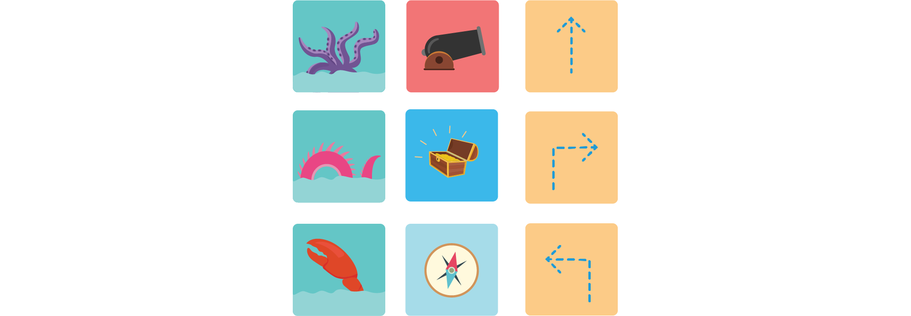
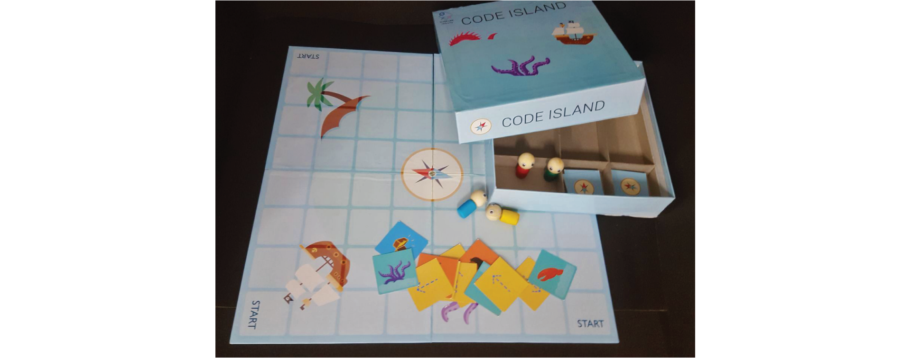
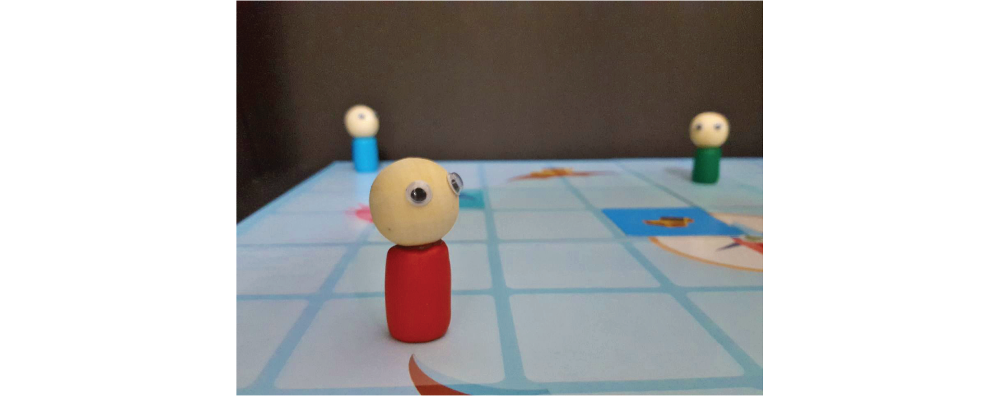

GAMIFICATION FOR CHILDREN
CODE ISLAND is a fantasy themed adventure board game where children play pirates trying to reach a treasure chest, that is located in the middle of the ocean.
With the help of gamification, the children playing get a basic understanding of how to code. Teaching kids how to code at an early age helps develop a foundation for critical thinking and problem-solving.

ROLE
User Research and Visual Design
TOOLS
Adobe Illustrator
WHY GAMIFICATION?
Gamification in learning can help professionals to create experiences that fully engage their learners. Gamification holds their attention and motivate them, given that they are striving to reach a goal.
When learners feel positive about their learning process and know that they are going to be rewarded in some way for their efforts, then they stop becoming passive observers and turn into active participants.
GAME ARCHITECTURE
MECHANICS:
DICE: To determine the order in which players will draw cards.
MOVEMENT: Players can move only one slot forward, to the left or to the right. One move counts as a turn.Players can also use obstacle and action cards. An obstacle/action card also counts as turn.
TURNS: Is based on the number rolled on the die.
CARDS: Some of the cards are optional to use, the player can use them when ever they wish.
DYNAMICS:
PREDICTION: The players need to predict their opponent's program in order to prevent them from reaching the treasure first, this is done by placing the opponents path with obstacles.
AESTHETICS:
SENSATION (Providing pleasure to sense): Visual (graphics on the board, dice), tactile(customized dice, Action and Obstacle cards and pawns)
FANTASY (Related to make believe): The game centers around pirates.
NARRATIVE (Story, Unfolding of events): Four pirates at sea are on the hunt for the hidden treasure.
CHALLENGE (Problem solving): Figuring out a strategic method by using the dice
FELLOWSHIP (Interaction/coordination with other players): The interactions between the players are in the forms of preventing others from reaching the treasure chest first by hindering their paths with obstacles
DISCOVERY (Exploring possibilities): Luck plays a huge role in this game as the result depends on the direction cards that the players draw.
EXPRESSION (Finding new ways of doing something, self-expression): Every time this game is played the players are forced to find new ways to complete the task, since the game is purely based on the outcome of the dice.
SUBMISSION (Relaxing, passing time): Setting up the game and having fun with friends and family while learning about it. It is not a very time consuming game.
VISUALS

Gaming Board

Playing Cards
FINAL OUTPUT
Based on the visuals, a prototype including the player pawns and packaging was printed, built and assembled.


USER TESTING
As a part of user testing, we took 3 sets of children aged between 6 and 10 years. Each set of children were taught the same topic in three different methods.
SET A: The children were taught the basics of coding, through traditional teaching methods, i.e., the content taught was mostly theoretical.
SET B: The children were taught the basics of coding, with the help of the software ‘Scratch’.
Scratch is a visual coding program, which helps young people think creatively yet systematically.
SET C: This group of children were taught the basics of coding, with the help of our board game.
Based on the various methods that we used to teach the basics of coding, we gave the children a maze problem to solve. Using restricted functions, they had to navigate their way to from one end of the maze to the other. With respect to the amount of time taken to complete the maze, we compared the 3 pools that we tested.
During testing, we noticed that children from Pool B and Pool C took approximately the same amount of time, i.e., the time taken to understand our board game is similar to that taken to understand Scratch.
We also noticed that children from Pool A took longer to complete the maze.
KEY LEARNINGS
This shows that with the help of a game and visuals, the learning process is far better than through traditional learning methods. This is sync with our aim, which is to improve education methods through gamification.